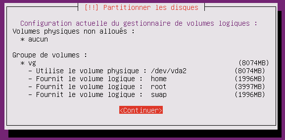
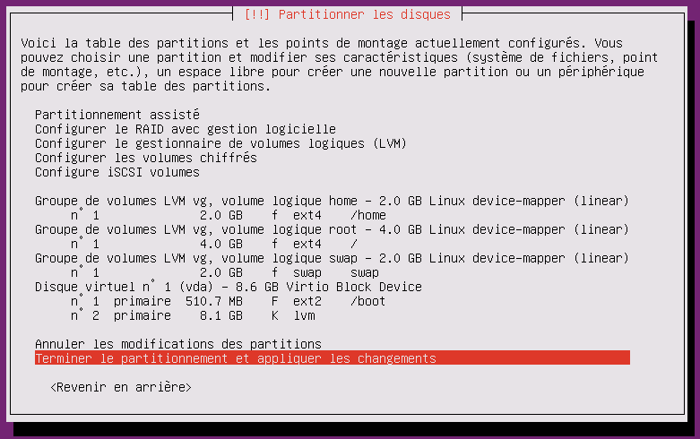

Partitionnement avec LVM durant l'installation du serveur
Partitionnement en utilisant la gestion des volumes logiques (LVM)
dominique huguenin (dominique.huguenin@rpn.ch) -Plan de partitionnement
+------------------------------------------------------------+
| /dev/sda (350GB) |
+------------------------------------------------------------+
+-----+-----------------------------------------++-----------+
| MBR | /dev/sda1 (250B) || /dev/sda2 |
| | || |
| | LVM pvsda2 || |
+-----+-----------------------------------------++-----------+
+-----------------------------------------+
| mc0-0315-xx-vg (250GB) |
+-----------------------------------------+
+------+------+------+--------------------+
| swap | root | home | |
| 2GB | 50GB | 100GB| |
+------+------+------+--------------------+
Supprimer les partitions existantes
- Sélectionner le disque SCSI (0,0,0) (sda)
- Faut-il créer une nouvelle table des partitions sur le disque ? oui
Création du groupe de volumes logiques sur la partition /dev/sda1 (LVM2)
-
Sélectionner Espace libre
- Créer une nouvelle partition,
- Nouvelle taille de la partition : conserver la totalité du disque
- Type de partition : primaire
- Emplacement de la nouvelle partition : début
- Créer une nouvelle partition,
-
Caractéristique de la partition
- Utiliser comme : lvm
-
Configurer le gestionnaire de volume logique (LVM)
- Écrire les modification sur le disque et configurer LVM : oui
-
Créer un groupe de volumes
- Nom du groupe de volumes : vg
- Périphériques pour le nouveau groupe de volumes : /dev/sda1
-
Créer un volume logique
- Groupe de volume : vg
- Nom du volume logique : swap
- Taille du volume logique : 2G
-
Créer un volume logique
- Groupe de volume : vg
- Nom du volume logique : root
- Taille du volume logique : 50G
-
Créer un volume logique
- Groupe de volume : vg
- Nom du volume logique : home
- Taille du volume logique : 100G

Configuration des systèmes de fichiers et point de montage pour les volumes logiques
-
Sélectionner le volume logique vg swap
- Utiliser comme : swap
-
Sélectionner le volume logique vg root
- Utiliser comme : système de fichier ext4
- Point de montage :/
-
Sélectionner le volume logique vg home
- Utiliser comme : système de fichier ext4
- Point de montage :/home
